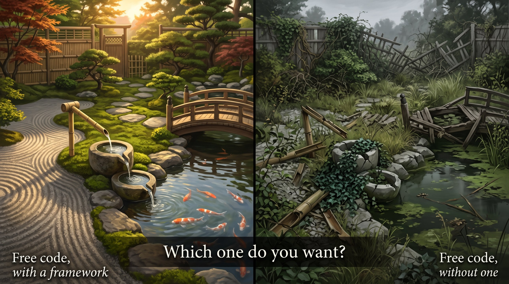
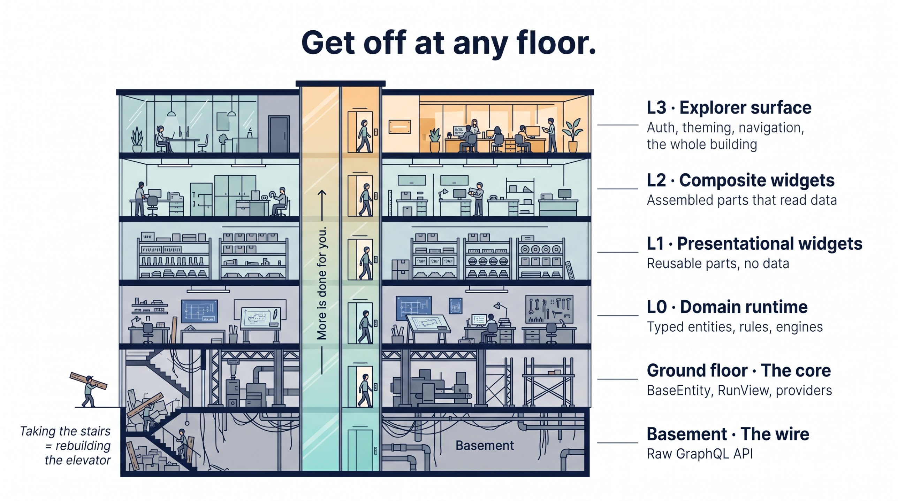

01The thesis: solve UI once
Everything in MemberJunction rests on one instinct: solve an architectural problem once, in the right layer, and let everything above inherit the answer.
- The entity layer is metadata-driven, so a table becomes a typed, validated, permissioned object without anyone writing that code by hand.
- Providers are pluggable, so the same object runs against GraphQL in a browser and against SQL on a server.
- Forms are generated, then extended in slots rather than rewritten.
The UI follows the same instinct. It is layered, pluggable and extensible, and each layer is defined by what it is allowed to touch, not by what it looks like. That one choice is what lets a component built once:
- render in an MJ Explorer tab,
- embed in a plain Angular app,
- ship as an HTML element on someone else's website,
- and run in a test with no network at all,
without a fork and without a copy.
MJ is not a typical framework. Most frameworks are a set of conventions wrapped around somebody's first app. MJ is a metadata-driven application architecture, and the view tier is simply one more place that architecture applies. The result is a framework more concerned with getting out of your way than with holding on to you, as the next sections show.
Every component ever written got asked, eventually, to appear somewhere it wasn't built for:
- an order editor built inside an Explorer tab gets wanted on a record form;
- a checkout built for an admin gets wanted on a public website;
- a chat pane built for Explorer gets wanted in a React host.
There are exactly two ways to answer that request. Either the component knows about its host, so the second surface gets a copy and the copies drift forever. Or the component knows only its inputs and its events, so it gets embedded, and there is one implementation and one place to fix a bug. MJ is built so that the second answer is the default one.
02Why a framework matters more when code is free
There is a popular argument that goes like this: AI can now write code instantly, so frameworks matter less. Why learn someone's conventions when an agent can generate whatever you need?
That argument has it exactly backwards.
When code was expensive, the scarce resource was the ability to produce code, and a framework's job was to save keystrokes. That job has largely evaporated. An agent will happily produce a bespoke screen, a bespoke data-access service and a bespoke modal in thirty seconds.
But when code is nearly free, the scarce resource becomes coherence: the property that ten thousand lines written by forty people and two hundred agent sessions still read as one system, grow in one direction, and can be fixed in one place. Free code does not produce coherence. It produces volume.

Think of it as a garden. Without a framework, free code is a plot left to grow: everything sprouts, nothing connects, and every new plant competes with the last. A framework is the difference between that and a well-made garden, where the water flows where it should, the paths go somewhere, and new planting extends the design instead of fighting it. Making that kind of garden takes engineering and artistry together, and so does a coherent codebase.
Here is the problem in UI terms. When an agent can regenerate a screen in seconds, the temptation to not reuse goes up, not down. Why find the existing mj-entity-data-grid when you can generate a new table? Why extend the generated form when you can generate a whole new one? Each regenerated one-off is individually fine. Collectively they are a thousand screens that look slightly different, validate slightly differently, and each need their own bug fixed. The usual symptom is a large global stylesheet that quietly rebuilds banners, chips, tabs and panels the shared library already ships as components, because nobody found the components.
So in the AI era, a framework's job shifts from saving effort to imposing a shape. In MemberJunction, that shape is:
- the layers (section 5),
- the boundaries between them, which are machine-checked (section 8),
- the shared component library and design tokens, so there's one button and not forty.
That shape is what keeps cheap code coherent. A great framework matters more when code is free, not less.
03The elevator: the whole stack, floor by floor

Most people picture MJ as "a UI framework with an API underneath." It is closer to the opposite: a layered system in which UI is only the top few floors. You can get off at any floor. The higher you ride, the more is done for you.
The numbered floors, L0 to L3, are MJ's established layers, defined in UI_LAYERING_GUIDE.md, which remains the source of truth. This guide doesn't renumber them. It adds the two foundation floors they stand on, so you can see the whole building.
Explorer surface
Resources and dashboards (
BaseResourceComponent,BaseDashboard), forms opened as Explorer tabs, navigation viaNavigationServiceYou can beInside MJ Explorer, the branded, authenticated chassisComposite widget
Angular widgets that assemble L1 parts and may read data, but only through
ProviderToUse. They never navigate. The entire forms architecture (BaseFormComponent,mj-entity-form-host, form dialogs and slide-ins, panel slots) lives here.You can beAny Angular appPresentational widget
Angular parts: inputs in, events out, zero data access.
@memberjunction/ng-ui-componentslives here.You can beAny Angular appDomain runtime
Pure TypeScript with no Angular at all. Your app's generated entity subclasses and shared rules, its engines, its Remote Operation clients, its validation and state machines. MJ's framework-neutral runtimes also live here:
@memberjunction/theme-engine,markdown-core,conversations-runtime,realtime-runtime.You can beAny TypeScript runtime and any framework: browser, Node, a worker, ReactGround floor The core
MJCore,MJGlobaland the provider architecture:BaseEntity,RunView,RunQuery,Metadata,BaseEngine. Everything on L0 is built from these.You can beAny TypeScript or JavaScript runtimeBasement The wire
The GraphQL API. Raw requests and raw JSON, with no objects.
You can beAnything that can make an HTTP call
The ground floor and L0 are the floors most people don't know exist, and they may be the most important ones. They are where the typed entity layer lives, and they sit below any UI decision at all.
OrderEntityknows thatStatusis a closed union and thatLineTotalGrossisDECIMAL(18,2), because CodeGen generated it from the schema.order.Validate()runs the same rules in the browser that the server runs on save.order.Save()works identically whether the code is running in a browser over GraphQL or on a server against SQL. The code doesn't know which tier it's on, and doesn't need to.
That last point is the provider architecture's quiet superpower: tier transparency. Write RunView.FromMetadataProvider(this.ProviderToUse) once and it works on either tier.
Getting off at any floor
Every floor is a legitimate exit, and saying so plainly is the point of the metaphor:
- Building in React, Vue or Svelte? Ride to L0. You keep typed entities, tier-transparent data access, cached engines, the theme engine and the conversation runtime, and you bring your own components.
- Building a Node job, an integration or an agent tool? Ride to L0. You keep the full entity layer with validation, and no UI at all.
- Building your own Angular app? Ride to L1 or L2 and use MJ's widgets as parts.
- Building an authenticated experience people come back to? Ride to L3. It is the whole building.
What the elevator makes visible is what each choice costs. Consider the developer who says "I'll just build my own app and call the API." They believe they are opting out of a framework. They are actually getting off in the basement and taking the stairs, which means rebuilding by hand everything the ground floor and L0 already provide:
- the typed objects,
- validation that matches the server,
- caching that invalidates itself when a record is saved,
- tier transparency,
- related-record graphs that save in one transaction.
That is not freedom from a framework. It is writing a worse one, one reinvented wheel at a time, with the bill arriving later.
04The decision ladder: which floor is yours?
Before writing a line of UI, answer three questions in order. They are ordered by how much they change the answer.
Rung 1: Do you need MemberJunction's data at all?
If the page is a marketing site, a static landing page, or anything that never reads or writes an MJ record, none of this applies. Build it however you like. MJ makes no claim on UI that doesn't touch MJ.
Rung 2: Is the user authenticated and returning?
This is the real architectural fork, and it is a better first question than "how heavy can we go."
- Authenticated and returning: a member portal, a committee workspace, a client portal, an admin console, a SaaS product's back office. The user signs in, comes back next week, and has preferences, permissions and history. → Explorer is your default chassis (section 6).
- Anonymous, or a single transaction: a public checkout, a registration form, an embedded donation widget, a lookup tool on a public website. → Don't haul Explorer along. Build with the widget layers and ship lightweight (section 7.3).
Why this cut? Explorer's weight is real, and authentication is exactly where that weight stops being a cost and becomes leverage. Pluggable auth, user-preference persistence, permission-aware everything and caching tuned for long sessions are pure overhead for a guest buying one ticket. For a member who logs in fifty times a year, they are hundreds of hours of work you didn't have to do. Explorer's cost is amortized over a relationship, not paid on a single transaction.
Rung 3: Where does the UI need to live?
| It needs to live… | Your chassis | Highest floor you'll use |
|---|---|---|
| In an authenticated, branded app | MJ Explorer (your brand, your theme) | L3 |
| Inside an existing Angular application you control | Your Angular app consuming MJ widgets | L2 |
| On someone else's page (any CMS, any framework, plain HTML) | An Angular Element: a custom HTML tag | L2, packaged |
| In a non-Angular framework you've committed to | Your framework on MJ's TypeScript core | L0 |
| In a script, a job, or an agent tool | No UI | L0 |
Most real systems use several rows at once. Orders is the clearest example: its back office is an Explorer app, its checkout is an Angular Element, and its server jobs live on L0. That's the design working, not a compromise.
05The layers, L0 to L3: rules that double as escape hatches
Each layer has rules, and each rule is there for a reason. Read them as guarantees rather than restrictions: every rule on a lower floor is a promise that the code there can leave the building.
L0: domain runtime
Pure TypeScript with no Angular at all. This is your app's business logic, built on MJ's core: generated entity subclasses with their shared rules, engines, Remote Operation clients, validation, state machines. MJ's framework-neutral runtimes live here too.
- Rule: no Angular, no React, no DOM assumptions in domain code. Importable from Node, a test, a worker, or any framework.
- Escape hatch: this is what lets a React host, a Node job, a vanilla page, or Skip-generated components use your app's rules and MJ's runtimes without adopting Angular. Anything decidable from the record and its children belongs here, so the browser and the server refuse a bad record for the same reason.
- Examples:
- Orders'
OrderHeaderEntityholds the shared order rules; Collaboration'scollaboration-coreholds its membership and audience rules as pure functions. @memberjunction/theme-enginederives the entire--mj-*token set from about eight brand seeds, using OKLCH color ramps.@memberjunction/markdown-coreemits HTML or a token AST for any renderer.@memberjunction/conversations-runtimeand@memberjunction/realtime-runtimeorchestrate chat and live agent sessions with no view attached.
L1: presentational widgets
Angular components that render what they are given.
- Rule: inputs in, events out, zero data access, and no injected services beyond Angular's own.
- Escape hatch: you can render an L1 widget from a hand-written object literal, with no network and no MJ session. That makes it testable, storybook-able, and usable in any Angular app.
- The library:
@memberjunction/ng-ui-componentsprovides the foundation set: - buttons via
button[mjButton],mj-dropdown,mj-combobox,mj-datepicker; mj-dialogwithMJDialogService,MJConfirmService,mj-slide-panel;mj-alert,mj-empty-state,mj-stat-badge,mj-tab-nav.
<mj-loading> (from ng-shared-generic) is the only spinner. These replaced Kendo entirely. Use them; never hand-roll a feature-specific equivalent.
L2: composite widgets
Angular components that assemble L1 parts into working things, and may read data to do it.
- Rule: data access only through
ProviderToUse, as inRunView.FromMetadataProvider(this.ProviderToUse)andthis.ProviderToUse.GetEntityObject(...). Nevernew RunView()ornew Metadata(). Never navigate. Emit intent instead, asRecordOpenRequestedorSaveRequested, and let the host decide what happens. - Escape hatch: because an L2 widget doesn't know where it lives, the same widget can appear in an Explorer tab, on a record form, in a standalone app, or inside an Angular Element. The provider it's handed decides which server and which credentials it uses.
- Examples:
mj-entity-data-grid(the AG Grid-based entity grid) andmj-record-selector;- Collaboration's
mjc-space-libraryandmjc-space-chat; - the conversations components in
ng-conversations.
Forms anywhere
MJ's forms architecture lives in @memberjunction/ng-base-forms, under packages/Angular/Generic. It is a widgets package, not an Explorer one, so the whole forms stack works in any Angular app and should be used there. This is one of the most powerful pieces of the platform, and one of the least appreciated.
- The form classes. CodeGen generates a form for every entity as a
BaseFormComponentsubclass, with sections, field categories and related-record grids derived from metadata. Extend it before you replace it: - Preferred: contribute a
BaseFormPanelinto a slot (top-area,before-fields,after-fields,after-related,after-everything) with@RegisterClassEx. Panels can replace a generated section or grid, and other apps can contribute into the same slots. - When necessary: subclass the generated form as
*Extendedand register it with@RegisterClass(BaseFormComponent, '<Entity Name>'). Always keep<mj-record-form-container>, which brings history, tags, lists and attachments with it. - Variants: runtime form overrides built in Form Builder or by an agent take precedence over both, with no redeploy.
- The host.
<mj-entity-form-host>resolves the right form for an entity throughFormResolverService(interactive override, then registered class) and renders it. It doesn't care where it lives. - The presentations. The same form opens inline, in
<mj-form-dialog>, in<mj-form-slide-in>, or in<mj-form-window>, or programmatically throughMJFormPresenterService. Per-instance behavior is set withEntityFormConfig, with no regeneration.
So a member portal built as its own Angular app, or an authenticated Angular Element, gets generated, extensible, metadata-driven forms for every entity it touches without Explorer. Explorer's contribution is only the L3 part: opening a form as a tab and navigating between records.
Bind to entities, not to a service layer. This is the most common mistake made by experienced Angular developers, because "put data access in a service" is good ordinary Angular advice. In MJ it is wrong. BaseEntity already is the data-access layer, already strongly typed from the schema, and already network-transparent.
- A service that wraps it re-types the same data as hand-written DTOs, and the boundary degrades to
anyone method signature at a time. - For cached, shared lookup data, use a
BaseEnginesubclass. It caches, observes, and invalidates itself when a record is saved. - Angular services remain fine for Angular-shaped state that has no table behind it: wizard step, selection, panel state. If a method on a service loads, saves, validates or maps entity data, it is in the wrong place.
The review test is: "Could a non-Angular host do this same work with the same objects?" If yes, the logic belongs on the entity, its shared subclass, or a Remote Operation.
L3: Explorer surfaces
The thin shells that plug into MJ Explorer: resources, dashboards, and forms opened as tabs.
- Rule: L3 is the only floor that may navigate, and only through
NavigationService. Even here,Routeris banned. Explorer is a tabbed workspace, not a set of URLs, andRouter.navigate()desynchronizes the tabs from the address bar. - Rule: L3 holds no domain logic and no markup a widget should own. The smell to watch for is an L3 class you'd have to edit to change how something looks.
- Escape hatch: because the shells are thin, everything valuable underneath can still be reached from elsewhere. What you lose by leaving L3 is the chassis, not the product.
The L3 building blocks:
- Forms as tabs. Explorer opens any form from the forms architecture (L2, above) as a workspace tab, with record navigation and deep links. The form itself is not Explorer code.
- Resources and dashboards. Extend
BaseResourceComponentorBaseDashboard, register with@RegisterClass, and wire them into an Application's nav items through metadata. CallNotifyLoadComplete(), whichBaseDashboarddoes for you. Round-trip URL state throughUpdateQueryParamsandOnQueryParamsChanged. - Page chrome. Use
<mj-page-layout>,<mj-page-header>and<mj-page-body>, andmj-left-navinside an app. Don't roll bespoke headers. - Agent-awareness. Every dashboard tells the platform's agents what it is showing with
SetAgentContextandSetAgentClientTools. That is how an MJ screen becomes something an AI assistant can see and act on, for free.
How the floors talk
Downward with @Input(), upward with @Output(). Use the cancelable Before<Verb> / After<Verb> event pairs where a host may need to veto an action. A widget emits intent and the host decides what it means. That is the whole contract, and it is why moving a component never means rewriting it.
A sentence for the skeptic
If you read the rules above as "MJ telling you what to do," read them again as a list of exits. L1 and L2 never import Explorer, so you can take them and leave. L0 never imports Angular, so you can take it to React, to Node, or to a script. The layering is not lock-in. It is the most detailed set of exit signs any framework has ever handed you.
06The honest case for Explorer as the default
First, the concession
Skepticism about frameworks is reasonable. Frameworks have a learning curve. They can be heavy. They make decisions you might have made differently, and wanting to own your app's destiny is a perfectly good instinct. Explorer is a large application, even with aggressive dynamic loading, and nobody should pretend otherwise.
So here is the precise claim, and no more: for authenticated, returning users, Explorer should be your default chassis, because what it gives you is enormous, and what it costs you shrinks every month.
What you get on day one
Picture building a member portal "from scratch, on the API." Before your first feature, you will need to build or integrate:
| You'd need to build | Explorer already has |
|---|---|
| Sign-in for whatever your client uses | Pluggable auth providers: MSAL (Entra ID), Auth0, Okta, Cognito, WorkOS and magic links, chosen by configuration |
| Permission-aware reads everywhere | The provider and entity layer enforce the user's permissions on every read and save |
| Caching that doesn't serve stale data | BaseEngine caches with observable change and automatic invalidation on save |
| Fast first paint on a big app | Dynamic loading, component caching, and first-paint work tuned in the shell |
| Theming, dark mode, brand skins | --mj-* semantic tokens, ThemeService, and Theme Studio deriving a full brand from a few seeds |
| A form for every table, kept in sync with the schema | Generated forms for every entity, extended by slots and panels (this one also works outside Explorer, in any Angular app) |
| Grids, filtering, saved views, export | mj-entity-data-grid, user views, the filter builder |
| Lists, tags, record history, version comparison | Built into every record form's container |
| User preferences that follow the user across devices | UserInfoEngine |
| An AI assistant that understands what's on screen | Agent context and client tools on every dashboard |
Each row is weeks of work done once, by people who've done it many times, and maintained for you. Each row is also something a framework-free app must maintain forever.
"But it'll look like MJ Explorer"
It won't. Explorer is a chassis, not a look. The proof is in production:
- Commercial SaaS products such as Izzy, Skip and Betty run their admin portals on MJ Explorer, branded and themed so thoroughly that people who use them every day have no idea.
- BizApps Collaboration's client portals, committee spaces and cohorts run on it too (section 7.1).
When was the last time a user complained that their portal was "too obviously built on a framework"? It doesn't happen, because the framework isn't what they see.
When Explorer falls short, improve the shell
Defaults stay honest only if they keep improving. MJ's rule: when Explorer genuinely lacks the flexibility or performance a product needs, improve the shell. Push the improvement down into Explorer instead of building around it.
- Every improvement to the shell lands in every product built on it.
- Every gap forked around becomes a private, permanent maintenance bill, and a reason the next team escapes Explorer too.
This feedback loop is how "default to Explorer" avoids decaying into "Explorer is bloated so everyone builds their own." The chassis absorbs the lessons.
The bill for "I'll just use the API"
Put plainly, in the language of section 3: going straight to the API means getting off in the basement. You will rebuild the ground floor and L0 (typed objects, validation, caching, tier transparency), then pieces of L1 and L2 (grids, dialogs, forms), then pieces of L3 (auth, preferences, theming), and you'll do it once per product. The bill doesn't arrive on day one. It arrives in month six, one reinvented wheel at a time, and it never stops arriving.
The elevator is right there.
07Three ways to ship, with worked examples
The same layers support three shipping surfaces. Two real apps sit at either end of the range, and the middle path is where Angular Elements quietly shine.
7.1 Inside Explorer: BizApps Collaboration
What it is. BizApps Collaboration is a free MJ Open App built around one object, the space: a bounded group of people, some from outside the organization, working on a bounded set of material, with an AI assistant bounded by the same rules. It covers client portals, boards and committees, chapters and cohorts, sponsors and outside reviewers. A committee is just a space type. Space types are metadata, and BizApps Committees will be rebuilt as one.
Why it's on Explorer. It is the textbook rung-2 answer: authenticated, long-running relationships. Collaboration ships no Explorer and no API of its own. mj app install drops it into your existing MJ host, and it inherits:
- the auth providers, including magic-link sign-in for outside participants;
- the theming;
- the caching;
- the chat area.
How it's layered. Collaboration is the cleanest reference implementation of the floors:
| Package | Floor | What it holds |
|---|---|---|
@mj-biz-apps/collaboration-core |
L0 | The rules as pure functions: invitation ceiling, membership reach, bands, agent retrieval. No data access. |
@mj-biz-apps/collaboration-entities |
L0 | Generated entity classes and the shared rules |
@mj-biz-apps/collaboration-engine-base |
L0 | Browser-safe metadata caches (space types, role types) |
@mj-biz-apps/collaboration-ng-widgets |
L1 + L2 | mjc-* widgets that "take plain values, emit events, and work in any Angular app" |
@mj-biz-apps/collaboration-ng |
L3 | The Explorer surface and client bootstrap |
The widget package never imports @angular/router or @memberjunction/ng-shared and never navigates. Its events are named …Requested, as in SpaceOpenRequested and TabSelectRequested, and the host decides what happens.
The proof that it works. Collaboration has a private UX Gallery package: a small standalone Angular app that renders the real mjc-* widgets from fixtures, with no Explorer at all, and runs Playwright checks against them (light and dark). The same widgets that power the Explorer surface render in a bare Angular shell from hand-written data. That is L1/L2 portability demonstrated in CI, not just claimed.
Extensibility, the MJ way. A new kind of space is:
- metadata (its vocabulary, bands and allowed children);
- optionally a server driver and a UI driver (
BaseSpaceTypeUIDriver) contributing tabs, Overview cards and settings sections; - optionally its own table extending Space through IsA.
Nothing is forked. Other apps contribute into the same slots.
7.2 In your own Angular app: the widgets as parts
If you already run an Angular application and don't want Explorer's chassis, you can still ride to L2. Import the widget packages (@memberjunction/ng-ui-components, ng-entity-viewer, ng-conversations, or an app's *-ng-widgets package), give them a provider, and handle their events in your own router. The Collaboration UX Gallery above is a working example of exactly this shape.
What you keep: every widget, the typed entities underneath, tokens and theming. What you own: authentication, the shell, navigation and preferences, which are the things Explorer would have given you. That trade is often right for an existing app and rarely right for a new authenticated one (see rung 2).
7.3 Anywhere on the web: the Orders checkout, an Angular Element
The problem. BizApps Orders needs to sell things to people who have no MJ account: a conference registration, a membership, a course seat. The buyer is anonymous, the experience must be consumer-grade, and it has to drop into any website, whether a WordPress page, an association's CMS, or a chat or voice agent's panel. That is rung 2's other branch: no Explorer.
The tempting wrong answer is a bespoke JavaScript widget that calls some endpoints. It's light, and it would be one more thing to build, style, secure and keep in sync with Orders' pricing rules forever.
What Orders did instead. It built the checkout entirely in Angular, on MJ's layers, and packaged it as an Angular Element, a standard HTML custom element:
<mj-orders-checkout slug="summit-2027" api-root="https://api.example.org/checkout"></mj-orders-checkout>
<script src=".../checkout-element/main.js"></script>
That's the whole integration. Any page that can hold an HTML tag can sell an Orders product.
How it's built:
- The widget.
MJCheckoutWidgetComponent(<mj-checkout-widget>) is a reusable Angular component. It renders the form, extension fields discovered from metadata, quantities and attendees, and emits events likesubmitted. It works as a normal Angular component in Explorer or any Angular host. - The host.
CheckoutPublicHostComponentwraps the widget for the public case. It loads configuration, mounts payment (Stripe) when the product is paid, and drives the session: initialize → draft → payment intent → complete. - The packaging. About 30 lines in
packages/Angular/scripts/checkout-element-entry.tscall Angular'screateCustomElementand register<mj-orders-checkout>. The bundle is built ahead of time with the Angular linker, so the payment page needs nounsafe-eval, and it honors a CSP nonce. It ships as the package export@mj-biz-apps/orders-ng/checkout-element. - The host-page contract is plain DOM, so anything can integrate with it:
- HTML attributes in:
slug,api-root,email,source; - bubbling
CustomEvents out:checkout-state-change,checkout-complete,checkout-error,checkout-cancel,checkout-close; - a
checkout-resetevent in.
A Google Tag Manager tag can listen for checkout-complete; a chat agent can reset the element between callers. No event carries personal data, because every script on the host page can hear them.
The honest note on data. An anonymous buyer has no MJ session, so the public element does not talk to GraphQL through ProviderToUse. It talks to a narrow, purpose-built checkout edge (OrdersCheckoutEdge, served by MJAPI) with an origin allowlist and optional Turnstile. Behind that edge, the full stack runs: real entities, the real OrderPricingService, and order.Confirm() posting double-entry journal entries. That is the right pattern for unauthenticated surfaces: a small, explicit public door in front of the same typed core, rather than exposing the general API to guests.
Packaging is not the same as access. An Angular Element can sit on either side of the trust line, and the two cases are architecturally opposite:
| Unauthenticated element (the Orders checkout) | Authenticated element | |
|---|---|---|
| Who is using it | An anonymous guest with no MJ session | A signed-in user the system already trusts |
| How it reaches the stack | Through a deliberately narrow public edge, built for one job | Directly, through ProviderToUse, like any L2 widget |
| What it can touch | Only what the edge allows: a session, a draft, a payment, a confirmation | Everything the user's permissions allow |
| The safety model | Safety by constraint: rate limits, origin allowlist, session keys re-verified on every call | The user's identity and MJ's permission model, the same as in Explorer |
Supporting the first case is a feature, not a workaround. You want people who have no account to be able to use the full stack, as long as they come through an extremely narrow, secure door. The second case is simply an L2 widget shipped as an HTML tag instead of an Explorer tab. Same packaging format, completely different trust posture. Never read "packaged as an element" as "has restricted access," or the reverse.
Why this is the sweet spot for public, transactional UI:
| Bare custom widget calling APIs | Angular Element on MJ layers | Full MJ Explorer | |
|---|---|---|---|
| Page weight | Lightest | Light: one bundle, one component tree | Heaviest |
| Uses MJ's widgets, tokens, typed models | No | Yes | Yes |
| Same component reusable inside Explorer | No | Yes: <mj-checkout-widget> |
n/a |
| Drops into any HTML page | Yes | Yes | No |
| Needs an MJ login | Usually not | No | Yes |
It is heavier than a hand-rolled widget, but for nearly everything it is plenty fast, and in exchange you get full-stack power encapsulated behind one HTML tag. Angular Elements are the easiest way to take the power of Angular, and of MJ's layers, to any page on the web.
08Rules and enforcement
MJ doesn't rely on good intentions. The fence around the garden is mechanical.
Layers are declared, then checked
Every Angular package declares its layer in package.json with "mjUILayer":
| Value | Floors | Meaning |
|---|---|---|
runtime |
L0 | No Angular at all |
widgets |
L1, L2 | No @angular/router, no @memberjunction/ng-shared, no Explorer packages |
surface |
L3 | Explorer resources, dashboards, and Explorer-specific form registrations |
shell |
— | An application (Explorer itself, a UX gallery, a standalone app) |
mj standards check (@memberjunction/standards, whose ui-layers check enforces this) fails the build when a widgets package imports the router or an Explorer package. The guard covers dependencies in package.json too: a widgets package that merely declares @angular/router has already lost the property.
Design is tokenized, then checked
- Colors come from semantic
--mj-*tokens (--mj-text-primary,--mj-bg-surface,--mj-brand-primary…). Never hardcoded hex. Never primitive tokens like--mj-color-neutral-500, which don't adapt to dark mode. Usecolor-mix()for translucency. - App-specific tokens are expressions of MJ's semantic tokens, never new raw colors. Collaboration's
--mjc-*set is the model. - Controls come from
ng-ui-components. Never Kendo, PrimeNG or Material. Never a component-scoped restyle of.mj-btn. - Icons are Font Awesome.
- Global CSS kits are an anti-pattern. Style in the component. A global sheet ends up duplicating components MJ already ships, and if it reuses MJ's
mj-class prefix it collides with MJ's own classes in ways that depend on stylesheet load order. - Enforced by:
npm run check:ui(tokens, buttons, SCSS compilation, focus rings) on every PR tonext.
Code conventions that keep widgets portable
- Extend
BaseAngularComponentand useProviderToUse. Forward[Provider]to children. RunViewdoesn't throw, so check.Success. Batch withRunViews. Ask forResultType: 'entity_object'when you want entity types;'simple'returns raw rows, so a date column arrives as a string.- Persist user preferences through
UserInfoEngine(mj.<feature>.<pref>), neverlocalStorage. - Use
@Inputsetters, notngOnChanges. Use the modern control flow (@if,@forwithtrack). - PascalCase for public members, inputs and outputs.
The guides behind this one
This guide is the why and the map. The detailed how lives in MJ's guides/:
UI_LAYERING_GUIDE.mdFORMS_ARCHITECTURE_GUIDE.mdDASHBOARD_BEST_PRACTICES.mdNAVIGATION_AND_ROUTING_GUIDE.mdAPP_COLOR_ARCHITECTURE.md
Alongside those are packages/Angular/CLAUDE.md and packages/Angular/Generic/ui-components/README.md.
AAppendix for agents: the fence
The rules above without the argument. Treat each one as a hard constraint.
Choosing a floor
- The UI doesn't touch MJ data → this guide doesn't apply.
- The user is authenticated and returning → build an Explorer surface (L3) over widgets (L1/L2) over the domain runtime (L0).
- The user is anonymous → build widgets, package them as an Angular Element, and reach the stack only through a narrow, purpose-built server edge. Never expose the general API to guests. Don't depend on Explorer.
- The user is authenticated but the UI must live outside Explorer → the same Angular Element packaging, but the widget reads through
ProviderToUsewith the user's own permissions. Packaging does not decide access; authentication does.
- The user is authenticated but the UI must live outside Explorer → the same Angular Element packaging, but the widget reads through
- The consumer is non-Angular → stop at L0.
Layer boundaries
- L0 imports no Angular. L1 has zero data access. L2 reads only through
ProviderToUse. - Nothing below L3 imports
@angular/router,Location(for navigation),@memberjunction/ng-shared, or any Explorer package. This applies in source and inpackage.json. - L3 navigates only via
NavigationService, neverRouter. L3 contains no domain logic. - Widgets emit intent (
…Requested) through@Output(). Hosts decide.
Data
- No data-access service layer. Bind to
BaseEntitysubclasses, Remote Operations andBaseEnginecaches. Services hold only Angular-shaped UI state. - Never
new RunView()ornew Metadata()in Angular. UseRunView.FromMetadataProvider(this.ProviderToUse)andthis.ProviderToUse.GetEntityObject(...). - Check
.Successon everyRunView. UseResultType: 'entity_object'when typing results as entities. Never loop children (that's the N+1); useIncludeRelatedRecordsorRunViews. - Rules decidable from the record belong on the shared entity subclass (both tiers). Rules needing the database belong on the server subclass or a Remote Operation.
Forms and surfaces
- Forms come from
@memberjunction/ng-base-forms, which is L2 and works in any Angular app. Don't build a bespoke editor. Extend generated forms withBaseFormPanelslot contributions first. Full overrides subclass the generated form, register it with@RegisterClass(BaseFormComponent, '<Entity Name>'), and keep<mj-record-form-container>. - Resources extend
BaseResourceComponentorBaseDashboard, callsuper.ngOnInit()andsuper.ngOnDestroy(), callNotifyLoadComplete(), and round-trip URL state viaUpdateQueryParams+OnQueryParamsChanged. - Every dashboard sets
SetAgentContextandSetAgentClientTools. - Use
<mj-page-layout>,<mj-page-header>and<mj-page-body>. No bespoke headers.
Look and feel
- Controls come from
@memberjunction/ng-ui-components.<mj-loading>is the only spinner.button[mjButton]is the only button. Confirm goes on the left, Cancel on the right. - Colors come from semantic
--mj-*tokens only. No hex, no primitives. App tokens derive from MJ semantic tokens. - Style in the component. No global stylesheets. Never use the
mj-class prefix for app classes. - Font Awesome icons. Preferences go in
UserInfoEngine, neverlocalStorage.
Before you regenerate
- Search for an existing widget, panel slot or engine before generating a new one. Regenerating a one-off is the failure this framework exists to prevent.
- If Explorer or a shared widget falls short, propose an improvement to the shell or the library. Don't fork around it.
- Run
mj standards checkandnpm run check:uibefore declaring UI work done.